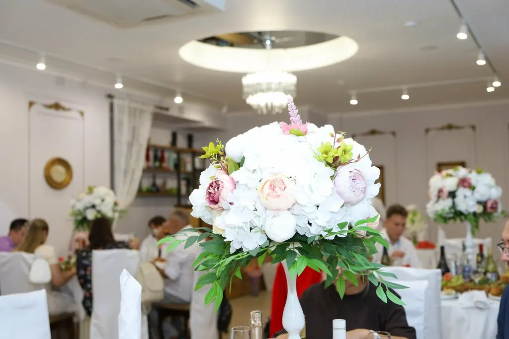
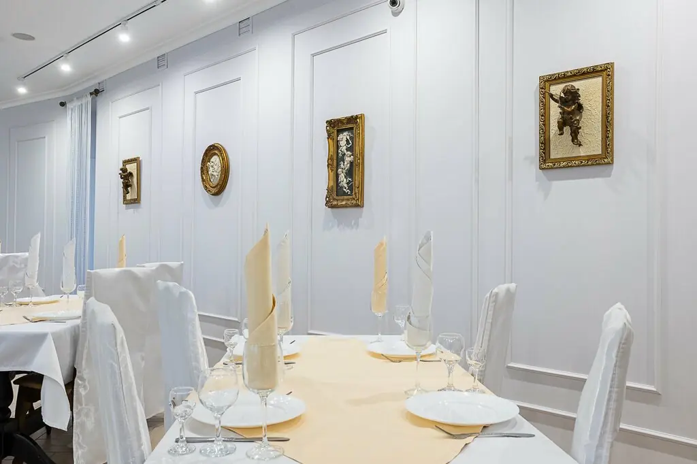
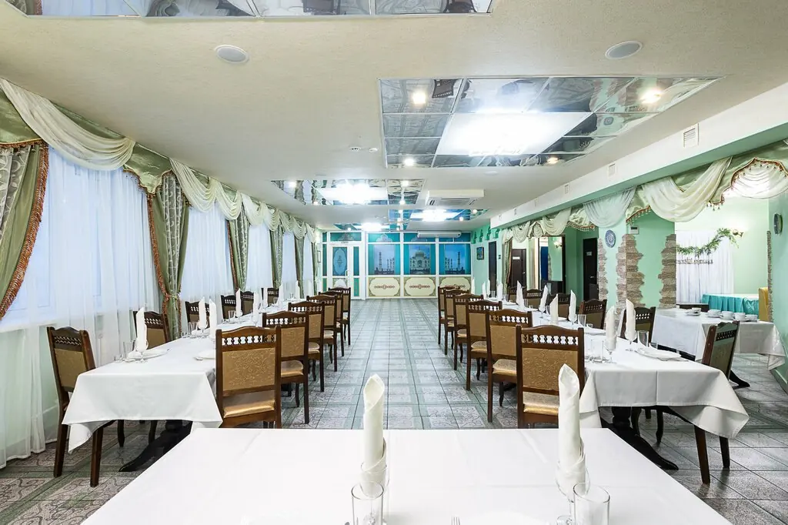

Ульяновск+7 937 275-33-00
Золотойпричал
Сюда швартуются на главные даты семьи: свадьбы, юбилеи и даже золотые свадьбы.
4,7 · 168 оценок

Камбуз
Заливное из языка430 ₽
Горбуша в кляре480 ₽
Профитроли с копчёной курицей580 ₽
Салат «Версаль»530 ₽
Салат «Райский»580 ₽
Салат «Камбуз»630 ₽
Часть меню с Яндекс Карт, банкетный расчёт подскажет администратор.
Судовой журнал

Запись первая
Светлый зал
На первом этаже: белые стены, окна в пол. Сюда приходили на золотую свадьбу и свадьбу дочери.

Запись вторая
Большой зал
Длинные столы, плотные шторы, место для ведущего и большой компании.
Слово пассажирам
Родители отмечали золотую свадьбу в банкетном зале на первом этаже.Алена Родионова
Недавно организовали юбилей в «Золотом причале», остались в восторге! Зал оформлен элегантно: свежие цветы, мягкое освещение.Руслан
Большая благодарность администраторам, поварам и официантам за организацию нашего торжества.Яна Кличникова